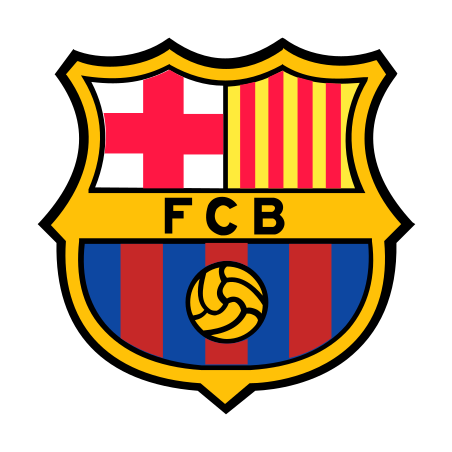
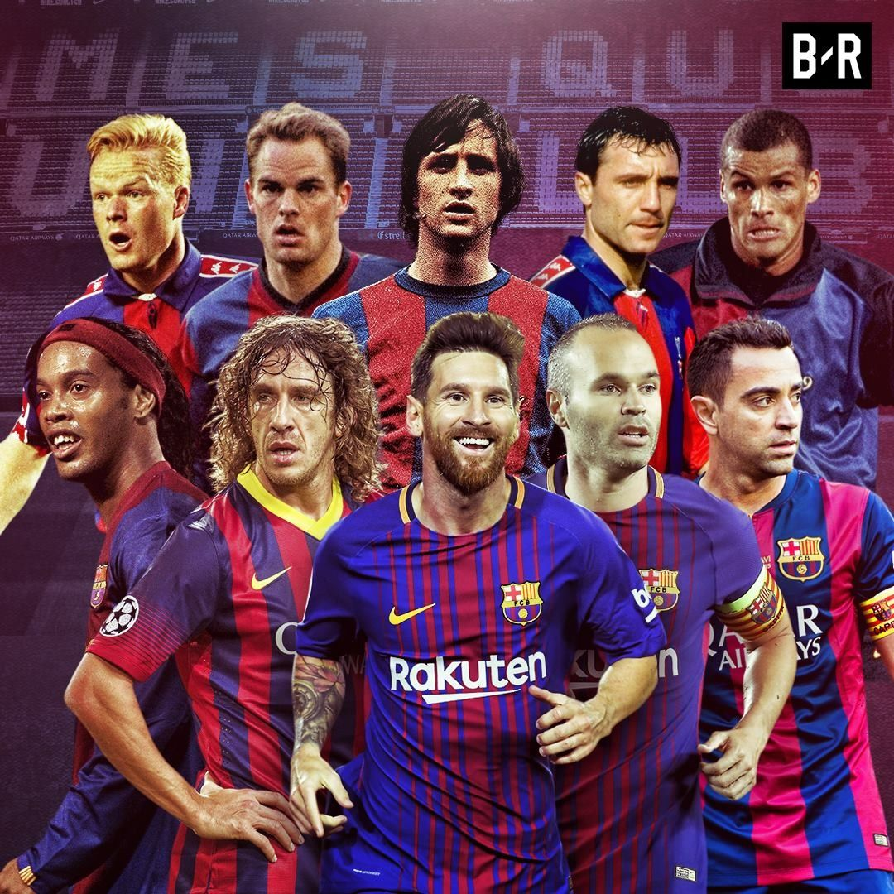

Historia Del Club:
El Barcelona es un club centenario, fundado en 1899 bajo el nombre de Foot-ball Club Barcelona y con Hans Gamper como presidente. Aquellos primeros pasos marcarían el futuro de la institución y, desde su segundo escudo, en los primeros años del siglo XX, juntarían su destino a tres letras: FCB. O lo que es lo mismo, las siglas de Fútbol Club Barcelona.
Nuestras Leyendas:
El Futbol Club Barcelona es conocido mundialmente por decenas de factores. (Por su historia, el mítico estadio...). Pero ningun club puede brillar tanto sin sus formidables jugadores. El Futbol Club Barcelona es un experto en crear y recibir jugadores de talla mundial, tales como:
- Lionel Andrés Messi: El jugador Argentino que a temprana edad empezó a ser conocido mundialmente por su gran destreza con el balón. Numerosas veces ha demostrado su amor por el club tanto dentro como fuera de el.
- Andrés Iniesta Luján: El centrocampista Español es uno de los jugadores españoles que mas titulos ha ganado, siendo el los mas importantes la Champions para el FC Barcelona y el gol que consagró a España como ganadora del Mundial de Sud Africa 2010.
- Carles Puyol Safocarda: El defensa Español y capitan del equipo durante gran parte de su trayectoria. No solo demostró una gran calidad a la hora de mover el balon sino que además era un lider y capitan como ningún otro. 